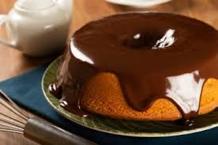

Receita de bolo de cenoura

Se você ama um bolo fofinho e delicioso, esta receita de bolo de cenoura com cobertura de chocolate é perfeita para você! Fácil de fazer e irresistível, ideal para acompanhar um café ou surpreender a família.
Ingredientes:
Massa:
- 3 cenouras médias raladas
- 1/2 xícara (chá) de óleo
- 4 ovos
- 1 colher (sopa) de fermento em pó
- 2 xícara (chá) de açúcar
- 2 e 1/2 xícara (chá) de farinha de trigo
Cobertura:
- 1 colher (sopa) de manteiga
- 1 xícara (chá) de açúcar
- 3 colheres (sopa) de chocolate em pó
- 1 xícara (chá) de leite
Modo de preparo:
Seguir exatamente a sequência de preparo!!!
Massa:
- Em um liquidificador, adicione a cenoura, os ovos e o óleo, depois misture.
- Acrescente o açúcar e bata novamente por 5 minutos.
- Em uma tigela ou na batedeira, adicione a farinha de trigo e depois misture novamente.
- Acrescente o fermento e misture lentamente com uma colher.
- Asse em um forno preaquecido a 180° C por aproximadamente 40 minutos.
Cobertura:
- Despeje em uma panela a manteiga, o chocolate em pó, o açúcar e o leite, depois misture.
- Ligue o fogo e continue misturando até obter uma consistaência cremosa, depois despeje a calda por cima do bolo